Kotoura, Tottori: things to do, food and stays
Kotoura · Tottori
Kotoura
Highlighted on the Tottori map.

Stay
サンシャイン とうはく

Sanshain Tohaku
Inn in Tokuman, Kotoura with buffet meals and breakfast available.
ホテル東伯イン
Hotel Tohaku Inn
Hotel in Yatsuhashi, Kotoura with business travelers.
Dining
すみれ

Sumire
海
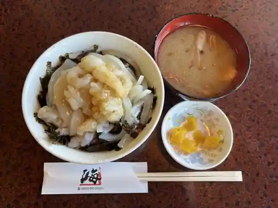
Umi
海鮮料理 きわみ
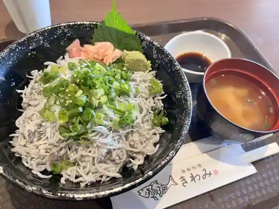
Kaisen Ryori Kiwami
カウィーのみるく館
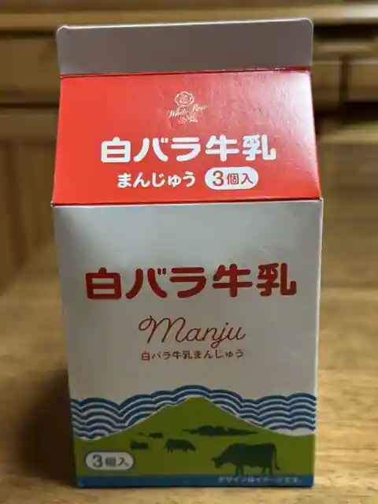
Kaui Nomiruku Kan
香味徳 赤碕店
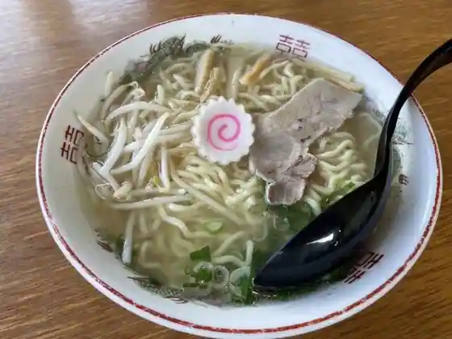
Komi Toku Akasaki
くつろぎ亭ひこべえ
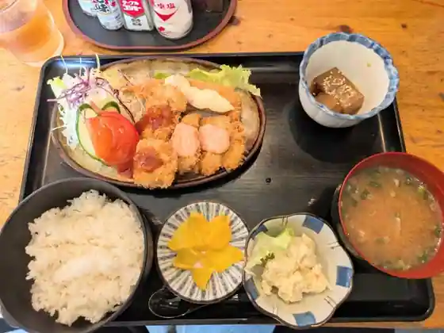
Kutsurogi Tei Hikobe
活魚 ふじ
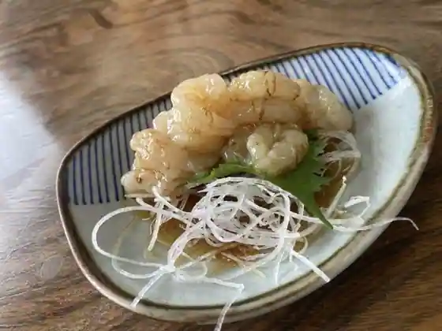
Ikeuo Fuji
味園
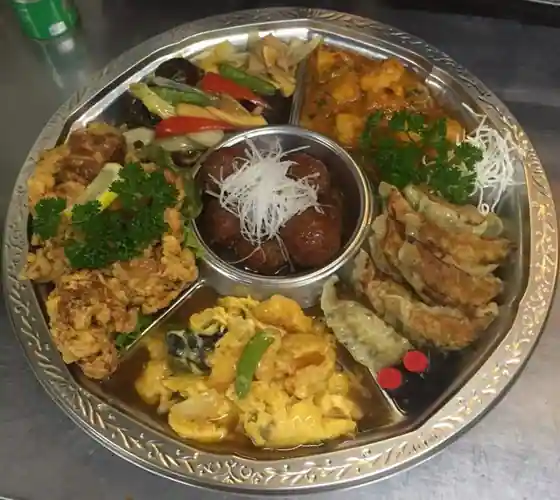
Aji Sono
たかうな
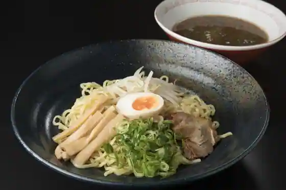
Takauna
漁協お食事処 あかさき亭
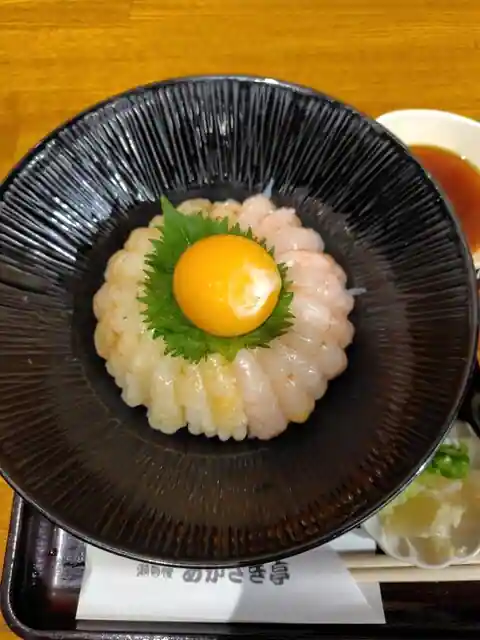
Gyokyo O Shokuji Tokoro Akasaki Tei
堂後飲食店
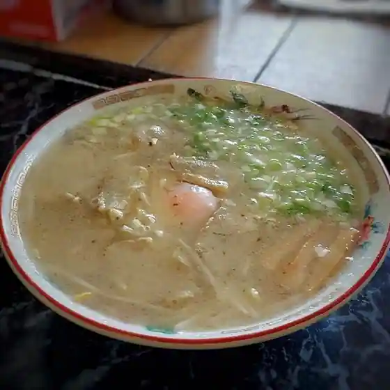
Do Nochi Inshoku
いち源
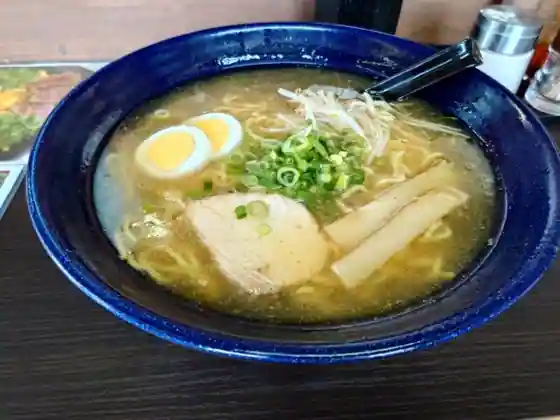
Ichi Gen
グレイン
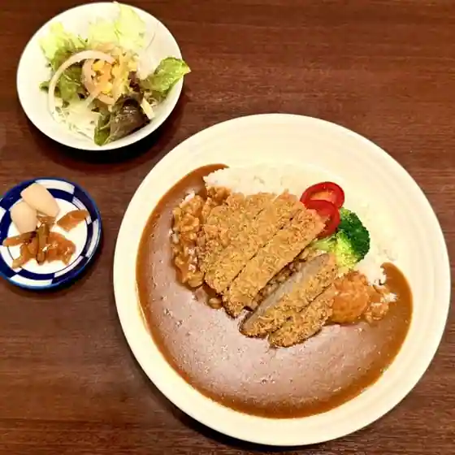
Gurein
味処 楽
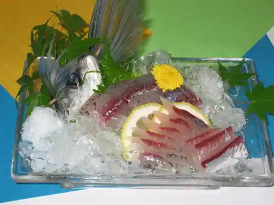
Ajidokoro Raku
山本おたふく堂 本店
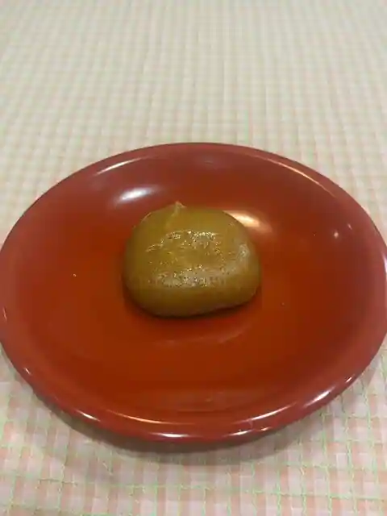
Yamamoto Otafuku Do Hon
新鮮市場プラッツ中央 ちっちゃなレストラン
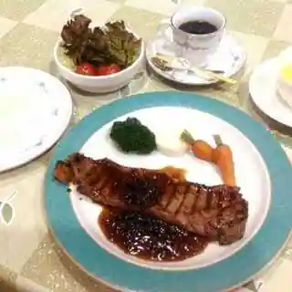
Shinsen Shijo Purattsu Chuo Chitchana Restaurant
お菓子屋 たけたけ
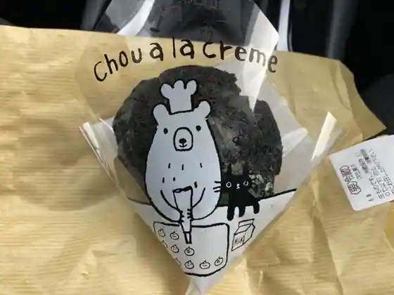
O Kashiya Taketake
末広食堂
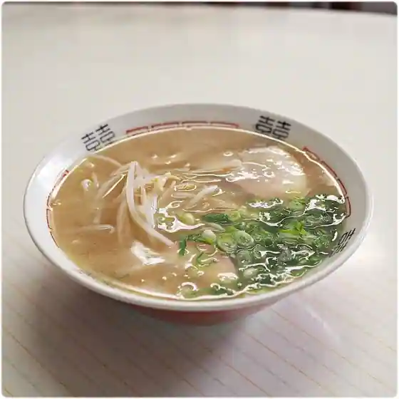
Suehiro Shokudo
銀酒房
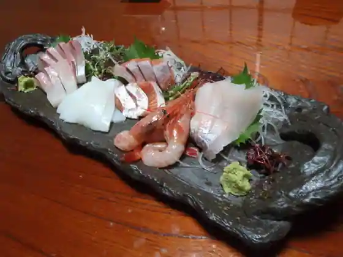
Gin Sake Bo
道の駅 琴の浦
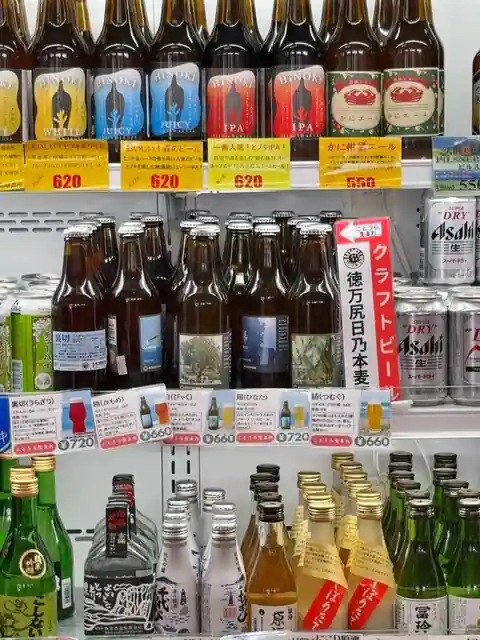
Michi No Eki Kon No Ura
鳥取牛骨ラーメン 京ら
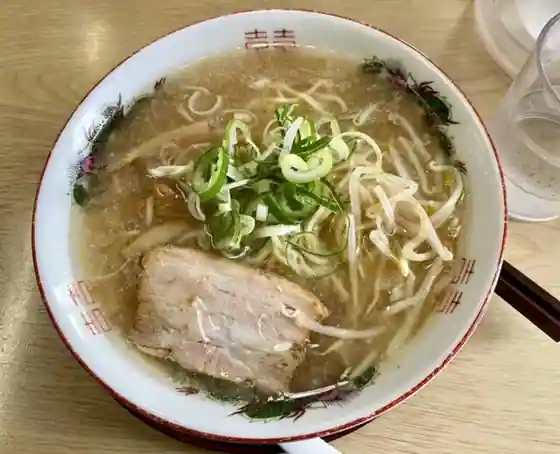
Tottori Ushibone Ramen Kyo Ra
キッチン＆カフェ プランタン
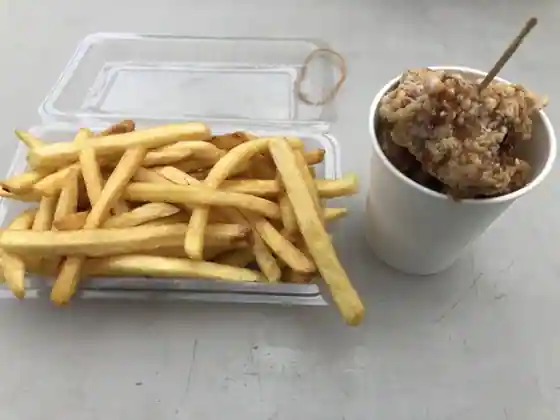
Kitchen & Cafe Purantan
高塚かまぼこ店
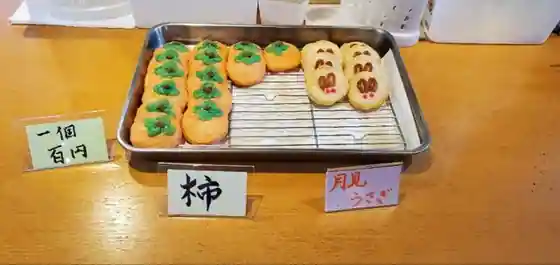
Takatsuka Kamaboko
jifukel
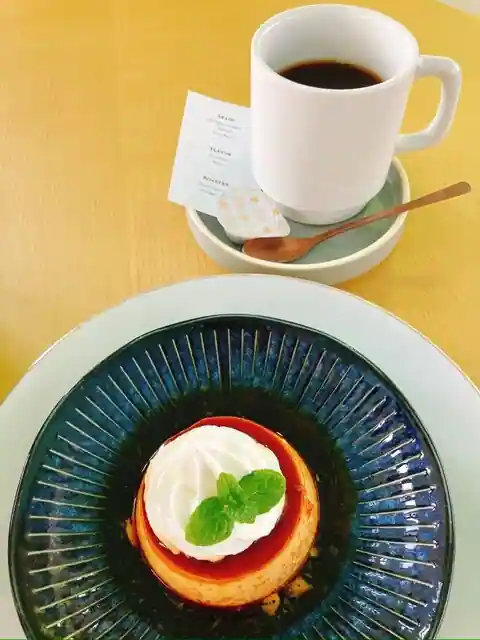
jifukel
Sights
Roadside Station Poto Akasaki
Nari Ishi no Hama

Hanami Kata Bochi

Nami Shigure Sandogasa

Gyunyu Yoguruto Kojokengaku

Ikkoganaru ~ Oyama Taki
Tottori Prefectural Senjo Yama Shonen Nature no Ie
Senjo Yama
Senjo Yamaman Hon Sakura Park
Kanzaki Shrine
Toyosaka Shrine
Yatsuhashi Coast
Ho Soku Ajisai Park
Roadside Station Kon no Ura
Kachiku Kairyo Center Tottori Ranch
Hikari no Kote
Nikkan Yuko Koryu Park (Kaze no Oka)
Ue Ho Man no Oyamazakura
Kawamoto Ie House
Tenno Mizu
Hoki no Dai Shii
Taka Isami
Haku Yo Cho
Akasaki Town Gyokyo Chokubai Center
Kotoura Town Hall